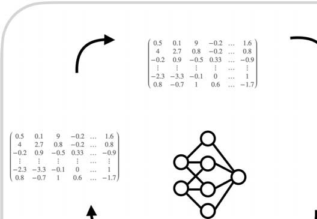
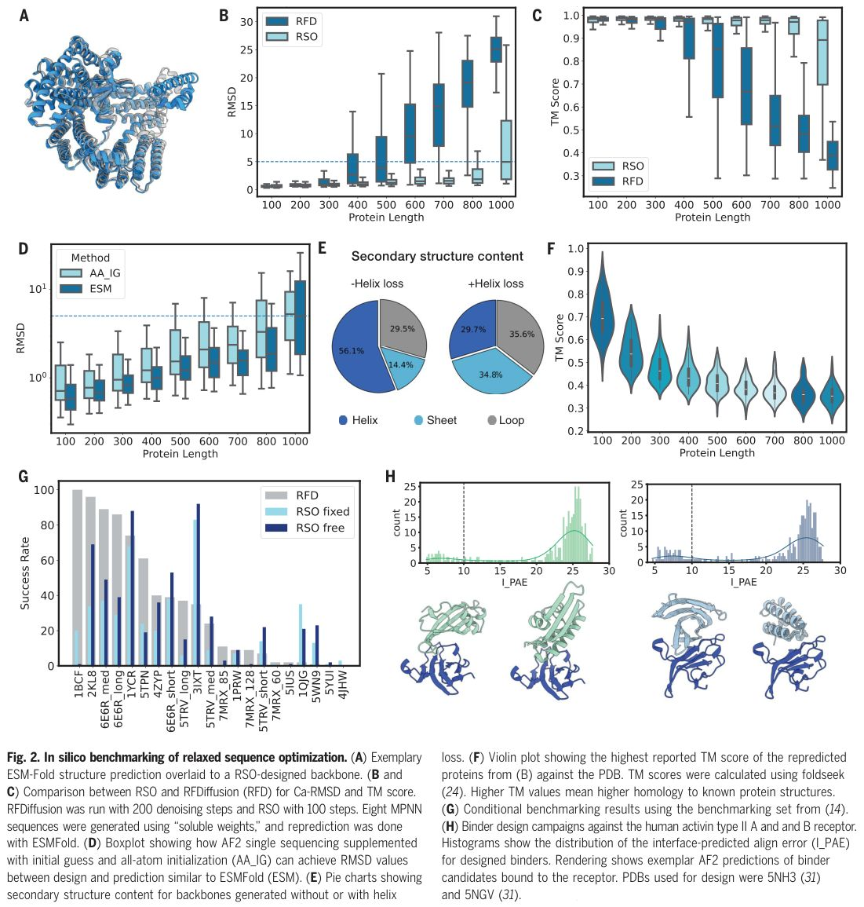
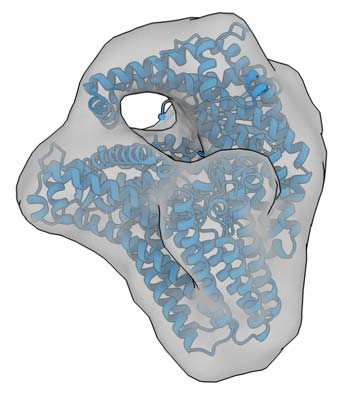
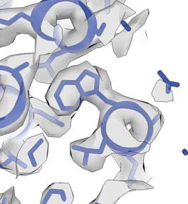
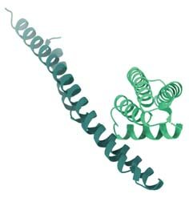

Scalable protein design using optimization in a relaxed sequence space
Abstract
Machine learning (ML)-based design approaches have advanced the field of de novo protein design, with diffusion-based generative methods increasingly dominating protein design pipelines. Here, we report a "hallucination"-based protein design approach that functions in relaxed sequence space, enabling the efficient design of high-quality protein backbones over multiple scales and with broad scope of application without the need for any form of retraining. We experimentally produced and characterized more than 100 proteins. Three high-resolution crystal structures and two cryo-electron microscopy density maps of designed single-chain proteins comprising up to 1000 amino acids validate the accuracy of the method. Our pipeline can also be used to design synthetic protein-protein interactions, as validated experimentally by a set of protein heterodimers. Relaxed sequence optimization offers attractive performance with respect to designability, scope of applicability for different design problems, and scalability across protein sizes.
T
he landscape of protein design has been fundamentally transformed by machine learning (ML) methods (1)(2)(3)(4)(5)(6)(7)(8)(9)(10). Structural prediction networks such as AlphaFold2 (AF2) (11), ESMFold (12), and RoseTTAFold2 (13) enable a variety of protein design tasks by accurately predicting protein structures from input sequences (11)(12)(13), which enables filtering of candidate designs. Generative models based on diffusion and flow matching (6, 8, 14-18), such as RFDiffusion (19) and Chroma (20), have gained substantial popularity for their ability to create de novo protein designs for various design tasks (19,20).
An alternative approach considers leveraging structure prediction networks such as AF2 through iterative sequence evolution in a process that was previously coined "hallucination" (3,4,7). However, slowly converging random search algorithms (3, 4, 7) and challenges with implementing robust gradient descent-based optimization in a discrete sequence space (21) have hindered expanding this approach to more complex protein design tasks. Here, we hypothesized that gradient descent-based hallucination toward target objectives could be improved by operating beyond the confines of discrete (i.e., physically realistic) protein sequence space to facilitate smoother and more direct optimization transitions (Fig. 1A).

To implement this "relaxed hallucination" process, we expanded upon prior work that facilitated back-propagation through the AF2 network (21,22). In this framework, a sequence is input into the network and a loss based on a target objective is calculated using the resulting predicted structure. The loss is then backpropagated with respect to the input sequence and a gradient is obtained. This gradient is used to update the input sequence toward the target objective. Updating the sequence with the obtained gradient usually does not produce a one-hot-encoded sequence, but rather a logitlike or position-specific scoring matrix (PSSM). These "relaxed" representations are physically unrealistic because each residue position is populated seemingly by a superposition of all the 20 amino acids, each with a specific numeral weight. Previous methodologies commonly forced the updated, relaxed sequence back into a real-world one-hot-encoded sequence representation by applying argmax operations (21,23), causing substantial deviations away from the optimal gradient direction (Fig. 1A, top). In our approach, which we call relaxed sequence optimization (RSO), we directly return the updated relaxed sequence back into the structure prediction network (Fig. 1A, bottom, and movies S1 and 2) and iterated until convergence.
RSO exhibited rapid and stable convergence (fig. S1A and movies S1 to S4) and improved performance relative to previous protocols (3,21). By incorporating loss functions to numerically measure the differences between predicted designs and targets, RSO thus enables rapid prototyping for various target properties without the need for retraining.
We found that RSO can converge along complex gradients, allowing the design of intricate design problems, including binder design and functional site scaffolding, and enabling the design of large single-chain proteins comprising up to 1000 amino acids (Fig. 1B).
Once RSO is converged, our pipeline discards the relaxed sequence and feeds the converged backbone geometry to the protein messagepassing neural network (ProteinMPNN) module (5) to generate candidate protein sequences for the converged backbone geometry (Fig. 1C). ProteinMPNN is a key component because it was specifically trained to design protein sequences that will also fold experimentally into a given backbone structure. The ProteinMPNNgenerated sequences are handed to structure prediction networks such as ESMFold or AF2 to repredict structures, which are then tested for agreement with the converged backbone geometry initially produced by RSO. This pipeline facilitates the swift engineering of de novo-designed proteins by simply adjusting the loss function to address user-defined design tasks.
Computational benchmarking
To evaluate the quality of RSO-designed backbones, we conducted designability tests (9,19) by generating sequence sets with ProteinMPNN for RSO-designed backbones and repredicting the encoded structure using ESMFold. We assessed similarity to the initial RSO backbones by calculating the root mean square deviation (RMSD) and the template-modeling (TM) score (24) and then selecting the best matching sequence.
We RSO-designed protein chains of increasing lengths, from 100 amino acids up to 1000 amino acids, with 100 candidate backbones per length. Our loss function optimized for confidence, a small radius of gyration, and a high number of intrachain contacts, and reduced helical content. For each backbone design, we created eight ProteinMPNN candidate sequences (using the soluble weights) (25), which were then (re)predicted with ESMFold (Fig. 2, A to C) and AF2 single sequencing (fig. S1B).

In our tests, RSO produced designs with a lower RMSD (indicating better matching) relative to RFDiffusion, particularly for larger protein sizes, as evaluated by ESMFold (Fig. 2B). RSO successfully generated promising designs for proteins as large as 1000 amino acids with median TM scores of 0.89 for 1000 amino acids (Fig. 2C). Although RFDiffusion performed well for smaller proteins, it faced challenges with producing viable backbones beyond 600 amino acids. In these tests, we also observed a trend in which the RMSD for larger proteins increased when using AF2 single sequence for repredicting (fig. S1B), whereas this trend was absent in ESMFold repredictions. By supplementing information about the target backbone as an initial guess (26, 27) to AF2's Evoformer module and by invoking "big bang initialization" (28), AF2 single sequencing could also (re)predict the larger proteins with improved quality, approaching the level of ESMFold (Fig. 2D).
We also tested whether the RSO relaxed sequences generated together with a converged backbone could be used directly for creating candidate sequences. Simply converting the relaxed sequences into one-hot-encoded sequences using argmax operations resulted in strong deviations of the repredicted structures from the target backbones (fig. S1C). Using more sophisticated approaches such as simulated annealing from the relaxed sequences improved the in silico success rates. This means that the in silico structures repredicted from the candidate sequences matched better to the initial backbone design, but the experimental testing of the sequences produced by annealing from relaxed sequences showed poor success rate (fig. S1D), which is consistent with previous work on AF2-only designed sequences (3, 4). AF2 structure predictions exhibited a high tolerance toward mutations (fig. S1E), which could conversely limit their ability to distinguish between valid and adversarial sequences. The inclusion of a component such as ProteinMPNN, which is specifically constructed for creating valid sequences for a given input backbone, thus improves the overall experimental success.
The RSO-generated proteins are structurally diverse (fig. S1F) and mostly globular (fig. S2A). The addition of a helical loss can reduce a bias toward generating helical secondary structures (Fig. 2E). To investigate the novelty of the proteins, we compared them with the entirety of currently known structures as provided by the Protein Data Bank (PDB) using foldseek (29). As in previous methods (19), for small proteins, there was significant similarity to existing proteins in the PDB, whereas for larger designs, there were fewer and fewer homologs in the PDB, suggesting that RSO may leverage AF2 generalization beyond the known protein space to create truly new folds (Fig. 2F and fig. S2B). Regarding computational efficiency, the use of back-propagation in RSO increases the time that it takes to complete one backbone design iteration for larger designs relative to RFDiffusion (fig. S2C) (how-ever, note that RFDiffusion had difficulties with creating valid designs beyond 600 amino acids). In terms of the success rate for generating designs with <3 Å RMSD to their target, RSO and RFDiffusion were similarly graphics processing unit (GPU) efficient (fig. S2D).
We also tested RSO on more complex design tasks, including discontinuous site scaffolding using a previously developed scaffolding problem benchmark set (19) (Fig. 2G). We used the same settings for all designs and adapted the same success criterion of whole backbone RMSD <2.0 Å and motif RMSD <1.0 Å combined with having high confidence [predicted local-distance difference test (pLDDT) >85]. We chose the maximum length of each designed loop between motifs and kept the full sequence of the scaffolded structural elements constant (one-hot) for simultaneous design of discrete amino acids and relaxed sequences. We used two design approaches, called "fixed" or "free" on the basis of whether the motifs were fixed in three-dimensional space with or without a structural template, respectively. RSO successfully found solutions for all designs tasks Update Steps Relaxed Sequences Optimal Gradient direction Previous work Relaxed Sequence Optimization Rapid Prototyping Complex Problems Large Designs Inputs Gradient Alphafold2 Output Loss Update Backprop Calculate Predict ProteinMPNN Usage of soluble weights If length > 600 AA Initial Guess & All Atom Initialization
The addition of templates ("fixed") reduced the average steps needed to converge toward low-RMSD designs, enabling the production of more candidate designs per unit time. The template-free method yielded designs of similar quality but converged more slowly. Combining a distogrambased loss with a RMSD loss yielded improved performance relative to using a pure frame-aligned point error-based loss (fig. S2F). Overall, RFDiffusion and RSO performed similarly well in these scaffolding problems (Fig. 2G), with success rates varying in a design taskspecific fashion.
To test whether RSO can also generate protein-protein binders, we designed binders toward the activin type 2 A and B receptors following a previously reported strategy (19,26,30).
After AF2 multimer filtering, we obtained between 10 and 16% binder candidates with an interaction-predicted aligned error (I_PAE) <10 (Fig. 2H), indicating the successful in silico design of promising binder candidates (19,26,30). The binder candidates were structurally diverse and included all beta to beta-alpha mixes or classical helical bundles (fig. S3, A and B). In addition, RSO yielded promising in silico binder candidates for other challenging binder design problems, including designing a twodomain connector for the human growth hormone receptor (fig. S3, C and D) and the design of binders to viral surface receptors (fig. S3F).
Experimental validation
Using RSO, we designed 85 proteins with sizes ranging from 100 to 300 amino acids. Nine monomeric proteins were purified exemplarily through affinity chromatography and analyzed using native size-exclusion chromatography (SEC). Eight of those proteins expressed well, showed one predominant peak on SEC, and eluted at the expected fraction given their designed molecular weight (Fig. 3A). Circular dichroism spectroscopy gave characteristic spectra that agreed with the expectation derived from the designed secondary structure content of the proteins (Fig. 3A). The proteins were thermostable up to 95°C, which is consistent with previous reports on the high thermostability of de novo-designed proteins (19,30,31). The remaining 76 proteins were expressed and purified in a higher-throughput fashion adopting previously described strategies (3, 19, 30); 58% of them had molecular weights matching the RESEARCH | RESEARCH ARTICLE expectation from molecular weight-calibrated SEC (Fig. 3B). We also designed a set of larger proteins comprising 500 to 1000 amino acids. We filtered candidate designs using AF2 supplemented with initial guess (26) and big bang initialization (28) and/or ESMFold reprediction. Although the overall in silico structure of the proteins was mostly correct and predicted with high confidence, a fraction of repredicted candidate designs had minor deviations from the RSO-designed backbone, such as low-confidence loop regions or routing problems in which domains were connected with long, unstructured regions (fig. S4). We constructed genes for 14 of the large candidate proteins; 13 of them expressed and 11 had a dominant peak at the correct molecular weight as seen by SEC (Fig. 3, C and D, and figs. S5, A and B, and S6, A and B). The structures of three of the proteins large enough for analysis using negative-stain trans-mission electron microscopy (nsTEM) agreed with the designed structure (Fig. 3D and fig. S7).

Structural investigation
We designed and crystallized exemplarily three proteins comprising 200, 400, and 600 amino acids (figs. S5A, S8, and S9, A to G), and obtained crystal structures using x-ray diffraction at 2.2-Å (200 amino acids), 2.1-Å (400 amino acids), and 2.8-Å (600 amino acids) resolutions, respectively (Fig. 4, A to C). The atomic models constructed into the respective electron densities agreed with the predictions of the designed backbones with Ca-RMSD values (reported by TM score) of 0.90 Å (200 amino acids), 1.28 Å (400 amino acids), and 0.92 Å (600 amino acids), respectively. These low RMSD values reflect overall agreement with respect to the side-chain conformations and demonstrate the atomic de-sign accuracy of RSO. Loops predicted with low confidence did show some deviations in the crystal structure relative to the designed geometry. However, loops predicted with high confidence were also reproduced well in the experimental structures (fig. S10, A and B).

We also performed single-particle cryo-electron microscopy (cryo-EM) with two larger candidate designs, having ~100 kDa molecular weight (comprising 950 and 1000 amino acids) (fig. S11, A and B). We determined and refined a high-resolution consensus cryo-EM map for the 950 amino acids design at a resolution of 2.7 Å (fig. S12, A and B), which allowed the outof-the-box construction of an atomic model using Model Angelo (32) (Fig. 4D and fig. S13E). The final, refined atomic model constructed from the experimental cryo-EM data had a Ca-RMSD of 1.08 Å relative to the prediction of the designed structure. Regions in the design that RESEARCH | RESEARCH ARTICLE Frank et al., Science 386, 439-445 (2024) 25 October 2024 had low AF2 pLDDT also were modeled with low confidence by Model Angelo in the cryo-EM map, indicating flexibility (fig. S13F). Initially, we could not resolve the N-terminal region comprising 130 amino acids in this 950-amino acid design (fig. S14A), presumably due to flexibility. Single-particle cryo-EM analysis of samples stored at low temperatures revealed homodimeric species that were linked in a domainswapping configuration through the flexible N-terminal part (fig. S14, B and C).
Single-particle cryo-EM analysis with the 1000-amino acid design candidate (Fig. 4E and fig. S11B) yielded a 3.3-Å resolution cryo-EM reconstruction (fig. S15). Using Model Angelo and PHENIX (33), we constructed an atomic model from the cryo-EM data. The model had a Ca-RMSD of 1.91 Å relative to the repredicted structure of the designed backbone (Fig. 4E and fig. S16), indicating good agreement between design and experimental structure.
These five experimentally determined protein structures demonstrate that RSO can be used for accurate protein structure design tasks.
Design of protein-protein interactions
Many current and emerging applications for de novo protein design involve designing protein-protein interactions. By including residue index gaps (34), AF2 can also be used for designing protein complexes comprising multiple separate chains (Fig. 5A). We used this feature to design homo-oligomers (fig. S17A) and heterodimers using RSO. To this end, we designed a loss function including two partial radius of gyration losses and an additional homodimer filter to favor heterodimers (Fig. 5A). This approach successfully created heterodimer designs in which individual monomers stayed monomeric when expressed separately, but formed a dimeric complex when mixed, as observed with SEC analysis (Fig. 5, B and C). Microscale thermophoresis and fluorescent polarization analysis yielded dissociation constants of 560 and 480 nM, respectively, for the heterodimeric design (Fig. 5D). We designed a second set of heterodimers but omitting in silico homooligomer filtering. These proteins independently formed homo-oligomers at the elution concentrations (fig. S17B), but at low concentrations, three out of the four proteins were monomeric. However, when we mixed the two distinct monomers designed for a heterodimer, all designs transitioned to the desired heterodimeric complex (Fig. 5E and fig. S17C). Binding affinity analysis using fluorescence polarization assays yielded dissociation constants for the heterodimeric interactions ranging from <4.0 to 790 nM (Fig. 5F). These findings demonstrate that RSO can also be used for interface design tasks in conjunction with ProteinMPNN sequence optimization.
We thank the DCI from EPFL, UNIL, and UNIGE for their support and for structural investigations of the K10 and K12 proteins; the team at NovoPro discoveries for structural studies; Google Cloud Services for providing computational resources; F. Praetorius, M. Pacesa, and L. Milles for useful discussions; J. Dauparas for help debugging the ColabDesign code; and the staff from BL17U1 at the Shanghai Synchrotron Radiation Facility (SSRF) for assistance during data collection; the Dubochet Center at EPFL Switzerland for technical support with cryo-EM; and the Shanghai Synchrotron for x-ray diffraction. The diffraction experiments were performed at SSRF BL02U1 (proposal no. 2020-SSRF-PT-014702-2). Funding: science.org/doi/10.1126/science.adq1741 Materials and Methods Figs. S1 to S17 Tables S1 to S11 References ( 36 – 51 ) Movies S1 to S4 MDAR Reproducibility Checklist

Conclusions
The emerging de novo protein design pipeline comprises backbone design, sequence generation, and design filtering. ProteinMPNN and ESMFold provide fast and reliable methods for generating sequences for given backbones and for repredicting structures from candidate sequences for filtering, respectively. However, the quality of the input backbone remains a critical factor driving the overall success of protein design. Our work with RSO shows that innovations in backbone design methods can continue to push the boundaries of protein design. Specifically, RSO achieves high designability and efficiently generates promising in silico candidates for large proteins, including tasks such as site scaffolding and binder generation. It also allows design objectives to be encoded in custom loss functions, enabling rapid adaptation to individual research questions without retraining entire networks. Furthermore, RSO operates in sequence space, allowing backbone structure design with sequence constraints. High-quality backbones such as those produced by RSO can provide the foundation for ProteinMPNN to excel, whereas ProteinMPNN's capabilities allow us to fully The flexibility of this approach may expand toward building synthetic proteins with a variety of user-defined conformations by combining loss functions for multiple predicted states into one common gradient. RSO pushes the size range of designable protein monomers beyond the 100-kDa molecular weight barrier while retaining excellent accuracy, thereby approaching the size of therapeutically relevant protein scaffolds such as antibodies. The concept presented herein may likely extend to other structure prediction methods such as AlphaFold-3 (35) and RoseTTAFold All-Atom (10) to accomplish tasks such as small-molecule binding and protein-DNA hybrid structures with marginal modifications to the prediction networks.
-Michael A. Funk View the article online https://www.science.org/doi/10.1126/science.adq1741 Permissions https://www.science.org/help/reprints-and-permissions Use of this article is subject to the Terms of service Science (ISSN 1095-9203) is published by the American Association for the Advancement of Science. 1200 New York Avenue NW, Washington, DC 20005. The title Science is a registered trademark of AAAS
References
- Ferruz N, Schmidt S, Höcker B. Nat. Commun 2022
- J. M. Singer et al ., PLOS ONE 17 , e0265020 (2022)
- B. I. M. Wicky et al ., Science 378 , 56 – 61 (2022)
- Verkuil R. bioRxiv 2022. doi:10.1101/2022.12.21.521521
- J. Dauparas et al ., Science 378 , 49 – 56 (2022)
- Trippe B. 2023. doi:10.48550/arXiv.2206.04119
- Anishchenko I. Nature 2021
- Anand N, Achim T. 2022. doi:10.48550/arXiv.2205.15019
- Chu A, Lu T, Huang P. Nat. Biotechnol 2024
- R. Krishna et al ., Science 384 , eadl2528 (2024)
- J. Jumper et al ., Nature 596 , 583 – 589 (2021)
- Lin Z. 2022. doi:10.1101/2022.07.20.500902
- Baek M. 2023. doi:10.1101/2023.05.24.542179
- Chu A, Cheng L, Nesr G, Xu M, Huang P. 2023. doi:10.1101/2023.05.24.542194
- Lin Y, Lee M, Zhang Z, Alquraishi M. 2024. doi:10.48550/arXiv.2405.15489
- Lin Y, Alquraishi M. 2023. doi:10.48550/arXiv.2301.12485
- Wu K. 2022. doi:10.48550/arXiv.2209.15611
- Alamdari S. 2023. doi:10.1101/2023.09.11.556673
- J. L. Watson et al ., Nature 620 , 1089 – 1100 (2023)
- J. B. Ingraham et al ., Nature 623 , 1070 – 1078 (2023)
- Goverde C, Wolf B, Khakzad H, Rosset S, Correia B. Prot. Sci 2023
- J. Wang et al ., Science 377 , 387 – 394 (2022)
- Norn C. Proc. Natl. Acad. Sci. U.S.A 2021
- Zhang Y, Skolnick J. Proteins 2004
- Goverde C. bioRxiv 2023. doi:10.1101/2023.05.09.540044
- Bennett N. Nat. Commun 2023
- Roney J, Ovchinnikov S. Phys. Rev. Lett 2022
- H. Schweke et al ., Cell 187 , 999 – 1010.e15 (2024)
- Van Kempen M. bioRxiv 2022. doi:10.1101/2022.02.07.479398
- Afonine P, Headd J, Terwilliger T, Adams P. New tool: phenix.real_space_refine. Computational Crystallography Newsletter 2013
- K. Wu et al ., Nature 616 , 581 – 589 (2023)
- K. Jamali et al ., Nature 628 , 450 – 457 (2024)
- Data For :, Frank. Figshare 2024. doi:10.6084/m9.figshare.27009724
- 2024. doi:10.5281/zenodo.13309081